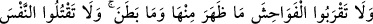

İLÂHÎ DİNLERİN
ESASI OLAN ON HÜKÜM
151. De ki: Gelin Rabbinizin size neleri haram kıldığını okuyayım: O’na hiçbir
şeyi ortak koşmayın, ana-babaya iyilik edin, fakirlik korkusuyla çocuklarınızı
öldürmeyin. Sizin de onların da rızkını biz veririz; kötülüklerin açığına da gizlisine
de yaklaşmayın ve Allah’ın yasakladığı cana haksız yere kıymayın! İşte bunlar
Allah’ın size emrettikleridir. Umulur ki düşünüp anlarsınız.
152. Rüşd çağına erişinceye kadar, yetimin malına, sadece en iyi tutumla yaklaşın.
Ölçü ve tartıyı adaletle yapın. Biz herkese ancak gücünün yettiği kadarını
yükleriz. Söz söylediğiniz zaman, yakınlarınız dahi olsa adaletli olun, Allah’a
verdiğiniz sözü tutun. İşte Allah size, iyice düşünesiniz diye bunları emretti.
153. Şüphesiz bu, benim dosdoğru yolumdur. Buna uyun. (Başka) yollara uymayın.
Zîrâ o yollar sizi Allah’ın yolundan ayırır. İşte sakınmanız için Allah size bunları
emretti.
Ey Muhammed, Mekkeli kâfirlere “de ki: “Gelin, Rabb’inizin size neleri haram
kıldığını” haramlar ve helâller konusundaki hükümleri şâmil olan ayetleri “okuyayım:”
“Gelin” anlamındaki “
” lafzı, “
”dan emirdir. Esasen bu kelime, yüksek bir
mekanda bulunanın, kendinden aşağıdakine seslenmesini ifade eder. Sonra
genelleştirilerek mânâsı genişletilmiştir. Çağıran herkes ister yukarıda, ister aşağıda
veya bunlardan başka bir durumda olsun bir şahsın yanına gelmesini ve kendisine